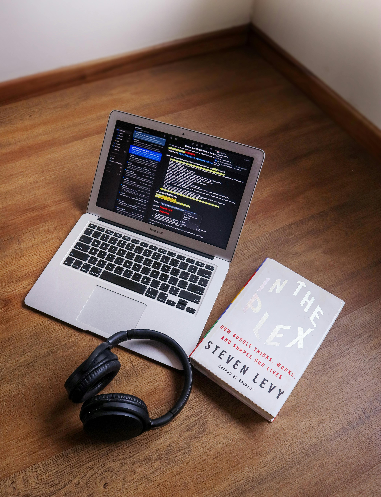

I'm Mubarak Oyejide.
I'm a Full-Stack Web Developer.
I am an High school leaver who is passionate and loves coding. I am also into Web 3 Blockchain and Crypto Trading.
My Skills

Design and Development
I started learning to code when I finished High school due to aftermath of how my years after high school went. Though I also really have an excitement towards things of reasoning and I see coding in that aspect which serves as a logical and calculative way of thinking. My curiosity caught me unaware as I wondered how these websites were made through the text alignment,the responsiveness,the cool images and background colors and how the Back-End works without disrupting the Front-End Frameworks. All these got me thinking and I embarked on the Coding Journey in order to fulfil my curiosity.

Gaming and Staying Fit
The only thing I enjoy doing aside coding is Gaming and it requires strategic thinking and problem-solving, skills that are directly transferable to coding and also enhance hand-eye coordination, which is beneficial for tasks requiring precision. Staying Fit boosts my blood flow to the brain, enhancing cognitive functions and concentration and also eleases endorphins, which help reduce stress and anxiety, common issues for those in high-pressure coding environments.